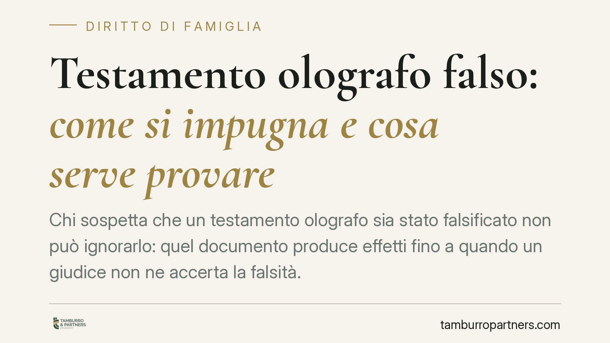

Testamento olografo falso: come si impugna e cosa serve provare
Chi sospetta che un testamento olografo sia stato falsificato non può ignorarlo: quel documento produce effetti fino a quando un giudice non ne accerta la falsità. Impugnarlo richiede un'azione civile e, quasi sempre, una perizia grafologica. Vediamo quali sono i presupposti, chi deve provare cosa e come muoversi in concreto per tutelare i propri diritti successori.

Il problema: un testamento che sembra falso resta valido
Il testamento olografo è quello scritto, datato e firmato interamente a mano dal testatore (art. 602 cod. civ.). La sua semplicità è anche il suo punto debole: non richiede notaio né testimoni, quindi si presta a contraffazioni.
Un punto va chiarito subito: finché nessuno lo contesta in giudizio, il testamento produce effetti. Chi vi è nominato erede può accettare l'eredità, disporre dei beni, chiedere l'esecuzione delle disposizioni. Il semplice sospetto non basta: occorre un'azione formale davanti al giudice civile.
Inquadramento normativo
La falsità del testamento olografo può riguardare due profili distinti.
Il primo è la falsità materiale: la scrittura o la firma non provengono dalla mano del defunto. In questo caso il testamento è nullo, perché manca il requisito dell'autografia richiesto dall'art. 602 cod. civ. L'azione di nullità è imprescrittibile (art. 1422 cod. civ.): può essere proposta in qualsiasi momento.
Il secondo profilo riguarda i vizi della volontà (violenza, dolo) o l'incapacità del testatore: si tratta però di annullabilità, con termini di prescrizione più stretti, ed è tema diverso dalla falsità in senso proprio.
Sul piano probatorio, le Sezioni Unite della Cassazione hanno stabilito che chi contesta l'autenticità di un testamento olografo non deve limitarsi a disconoscerlo, ma deve proporre una vera e propria domanda di accertamento della non autenticità. Ne consegue un principio decisivo: l'onere della prova grava su chi impugna il testamento, non su chi lo difende (art. 2697 cod. civ.). Chi sostiene la falsità deve dimostrarla.
Non è quindi sufficiente il disconoscimento previsto dall'art. 214 c.p.c. per le scritture private ordinarie. Il testamento segue una disciplina più rigorosa, ribadita da numerose pronunce di merito recenti (tra cui Trib. Napoli, Trib. Patti e Trib. Teramo nel 2024).
Cosa cambia per l'erede legittimo
Se sei un erede legittimo escluso o penalizzato da un testamento che ritieni falso, la conseguenza pratica è netta: devi agire tu, e devi portare le prove.
Lo strumento centrale è la perizia grafologica. Il giudice nomina un consulente tecnico d'ufficio (CTU) che confronta la grafia del testamento con scritture di sicura provenienza del defunto: lettere, documenti firmati, atti autografi. Più materiale comparativo autentico si riesce a produrre, più solida sarà l'analisi.
Attenzione ai tempi e ai costi. Il giudizio di accertamento è un ordinario processo civile: richiede tempo, e la CTU grafologica ha costi che, salvo diversa statuizione, seguono l'esito della causa. Va valutato con lucidità se gli elementi a disposizione giustificano l'iniziativa.
Un errore frequente è agire d'impulso, senza raccogliere prima materiale comparativo e senza una valutazione tecnica preliminare. La causa persa non è solo un costo economico: consolida definitivamente il testamento contestato.
Cosa fare in concreto
- Recupera scritture autentiche del defunto (lettere, documenti, firme certe) da usare come termine di paragone: sono la base di ogni perizia.
- Richiedi una valutazione grafologica preliminare prima di avviare la causa, per stimare la fondatezza dell'impugnazione.
- Verifica la tua posizione successoria: accerta se sei erede legittimo o legittimario, perché da questo dipende la legittimazione ad agire.
- Non accettare né dare esecuzione al testamento sospetto senza aver prima valutato l'azione, per non pregiudicare la tua posizione.
- Rivolgiti tempestivamente a un legale per impostare la domanda come accertamento di non autenticità, secondo l'indirizzo delle Sezioni Unite.
Un chiarimento sui termini
Contrariamente a quanto molti temono, l'azione di nullità per falsità materiale non ha scadenza (art. 1422 cod. civ.). Questo non deve però indurre a rimandare: con il passare del tempo il materiale comparativo diventa più difficile da reperire e la ricostruzione dei fatti più incerta. La prescrizione non è il problema; lo è la prova.
Consigliamo di affrontare la questione con metodo e con dati concreti, evitando sia la rassegnazione sia l'iniziativa avventata. La differenza tra un'impugnazione fondata e una temeraria si misura, quasi sempre, sulla qualità delle prove raccolte prima di entrare in aula.
Ogni famiglia ha il suo equilibrio.
Separazione, divorzio, affidamento, assegno: se vuoi un confronto riservato su una specifica situazione, scrivi allo studio. Ti rispondiamo entro un giorno lavorativo.